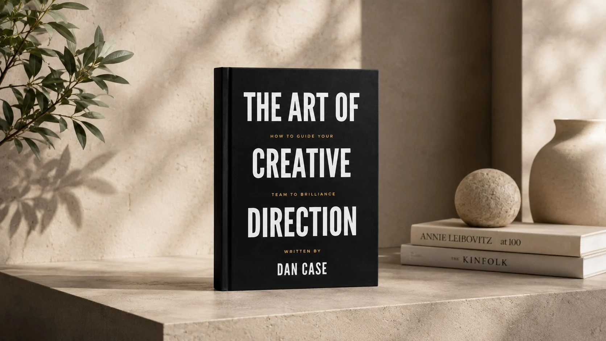
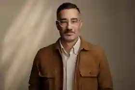

Creative Executive · Author · Educator
I build brands,
ideas and
creative teams.
For 24 years, I’ve helped organizations turn strategy into ideas, ideas into brands, and brands into work that people understand, remember and act on.
The work is only part of the work.
Great creative leadership isn’t about having all the ideas. It’s about seeing what matters.
Creating clarity when things are complicated. Knowing which idea is worth fighting for. Giving talented people room to do their best work. Building the trust that lets ambitious ideas survive.
I still love making things. But the real value I bring is knowing what should be made, why it matters, how to raise the standard—and how to lead people toward it.
Selected
work.
Five stories from a career spanning national advertising, brand systems, film and culture-shaping creative work. Recent executive work will be added next.
01
 →
02
→
02
 →
03
→
03
 →
04
→
04
 →
05
→
05
 →
→
Signs of Hope
The Salvation Army · Integrated / OOH
Live Extraordinary
UCHealth · Brand / Film / Print
GameStop
National TV · Entertainment / Retail
ESPN ESPYs
National TV · Sports / Entertainment
Restore
The Salvation Army · Film / Storytelling
Project imagery is temporarily sourced from the existing portfolio CDN. Replace with high-resolution originals when available.
Creative leadership
I don’t just direct work. I direct people toward better work.
The best creative leaders hold two things at once: a high standard for the work and a deep respect for the people making it. I’ve led teams, taught creatives, managed clients, built buy-in and stayed close enough to the craft to know when an idea still has another level in it.
“Dan is a true creative strategist and leader.”Lex Winship · Creative Writer & Strategist
“Dan is a true leader. A CD for the people.”Adam Setzer · Copywriter & Creative Director
“When he speaks, you listen.”Erik MacKinnon · B2B Growth Expert
Writing & teaching
Ideas on the work behind the work.
Creative direction is a craft. Creative leadership is another one entirely. My writing and teaching explore the judgment, chemistry, communication and culture that make strong creative teams possible.

About Dan
Maker.
Leader.
Teacher.
My career has taken me through agencies in Los Angeles, Dallas, Chicago and Grand Rapids; from art direction to executive leadership; from national campaigns to university classrooms. Outside the work, I’m most at home somewhere outdoors.
More about meSelected
experience.
Career highlights
RDV CorporationCreative & Communications Leadership · Grand Rapids2023—Now
Refine LabsAssociate Creative Director · Remote2022—23
Western Michigan UniversityProfessor · Advertising Creative Strategy2019—21
AUXExecutive Creative Director · Grand Rapids2017—19
The Richards GroupSenior Art Director · Dallas2009—17
Ground ZeroArt Director · Los Angeles2008—09
VCU BrandcenterMaster’s · Advertising / Art Direction2006—08
Start a conversation